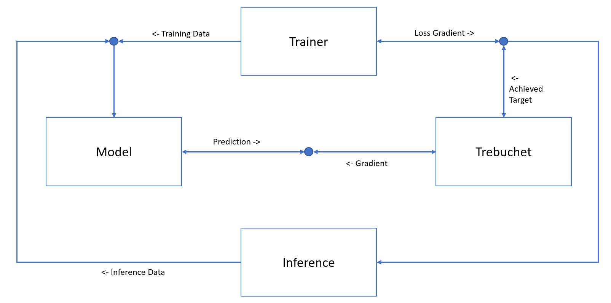

Introduction
This example will guide you through the process of mastering the art of controlling the throw of a trebuchet. A trebuchet is a medieval siege weapon and a type of a catapult that uses a long arm and a counterweight to swing the arm and throw a projectile.

As we do not have access to a physical trebuchet, we will utilize the Trebuchet.jl library to simulate the throwing process. This library allows us to create a virtual trebuchet, set the counterweight and angle of the arm, and calculate the throwing distance that can be reached. Additionally, we can also factor in wind speed which will have an impact on the achievable distance.
using Trebuchet
wind = 0
angle = 30
weight = 400
Trebuchet.shoot((wind, Trebuchet.deg2rad(angle), weight))[2]
Our objective is to hit a specific target distance as consistently as possible under varying wind conditions. To accomplish this, we must learn the appropriate counterweight and angle to use for our trebuchet. One way to learn this dependency is by treating the trebuchet as an environment and using a reinforcement learning approach to learn a function or neural network that provides the optimal set-up for the trebuchet. However, this approach would assume that we have no further information about how the trebuchet works and would treat it as a black-box.
Since we have the code implementation of the trebuchet logic, we should utilize it to aid in finding a suitable solution. Fortunately, we can make our Julia code differentiable with the Zygote.jl automatic differentiation package, allowing us to use the gradient information of the trebuchet to train a control network.
For more detailed information on how to train such a neural network in Julia, you can refer to this example.
While it is possible to master the trebuchet using Julia, we may also want to use other frameworks such as PyTorch to train our control neural network. To facilitate communication between the model and trebuchet in this scenario, we can utilize the swergio library, which allows for easy setup of communication via websockets.
To accomplish this, we will divide our code into two parts: the control model in Python using a PyTorch model and the trebuchet logic in Julia, and enable communication between these components. Additionally, we will need to provide functionality for training the control model, which can be achieved by creating another component to send training data to the model and evaluate the achieved distance target of the trebuchet.
The final setup of all the components and how they communicate with each other is illustrated in the image provided.
As depicted in the provided image, we have also added a final component to enable us to perform inference on the control model and obtain the distance from the trebuchet component.
In summary, this example demonstrates how we can use different and independent components, specifically the control model and trebuchet, and still perform end-to-end training using swergio.
In the following sections, we will delve into each component in more detail.